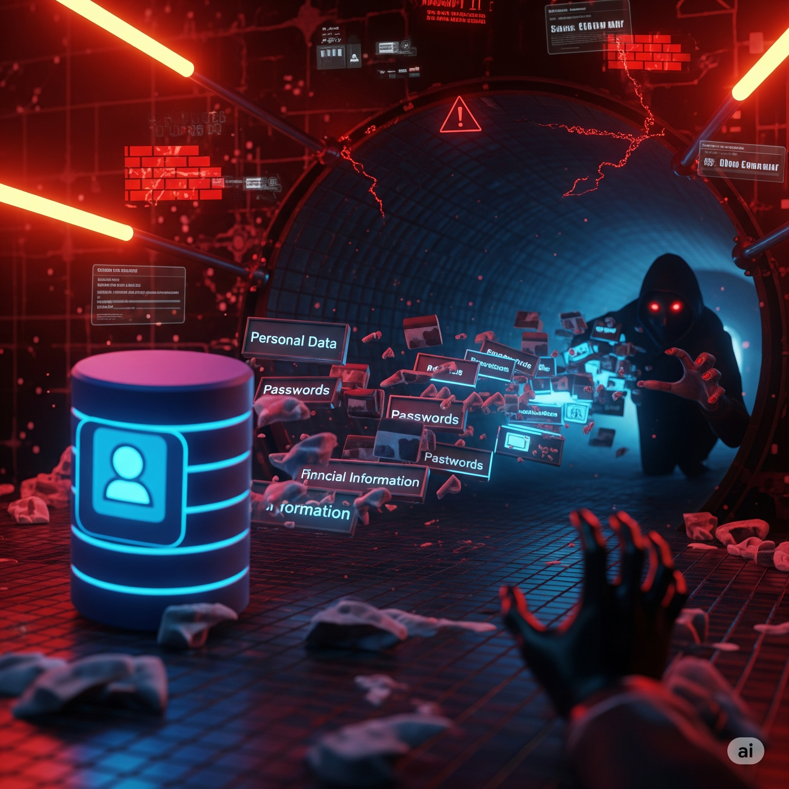

Welcome, **COLHAK Technology**'s **Cybersecurity Manager**!
You have a critical role in your team. You realized that an unpatched **zero-day vulnerability**
targeting your company's web application is being actively exploited. Attackers are infiltrating systems
to access sensitive data. Your mission: Stop this attack, control the damage, demand urgent mitigation
from the vendor, and start a race against time with system isolation decisions!
Simulation Roles
Your Role: Cybersecurity Manager
You are the leader of the team that detects the active attack and makes the first
intervention. You play an active role in technical analysis, threat hunting, and
mitigation steps. Your choices will directly affect the outcome.
CISO Anil Yilmaz Responsible for security, expects fast
action.
CTO Sadi Orcun Responsible for technical infrastructure and
application, vendor communication goes through him.
CEO Sultan Goze Reputation and business continuity are
priorities.
Vendor Representative (App Developer) Obligated to patch the
zero-day vulnerability, might be slow.
Key Metrics
App Security Status How vulnerable the application is to
exploits. (Initial: Critical)
Attacker Access The attacker's penetration into the system.
(Initial: Limited)
Potential Financial Loss Cost of the attack. (Initial:
$0)
Crisis Duration Time to control the crisis. (Initial: 0
Hours)
User Trust Users' belief in the application. (Initial:
100)
Decision Impacts
Strategic Evaluation
App Security
Critical
Attacker Access
Limited
Financial Loss
$0
Crisis Duration
0 Hours
User Trust
100
Time Remaining
04:00
Phase 1: Initial Detection and Shock
Moment 0:00 - Zero-Day Exploit Alarm!
During the night shift, you detected unusual activity in the WAF (Web Application Firewall) logs
of your critical web application. You see that some requests normally blocked are now being
bypassed and the application is responding in unexpected ways. Initial analysis indicates that
an unknown vulnerability is being actively exploited: A **zero-day attack**! Attackers are
trying to access the application's user database.
You receive an urgent call from CISO Anil Yilmaz: *"What does this mean? How can a vulnerability
we are unaware of be exploited? We must stop it immediately! What are we doing?!"*
What will be your first emergency response as Cybersecurity Manager?
Learning Note: Initial response is critical in zero-day
attacks. Rapid isolation limits damage; detailed observation provides intelligence but carries
risk.
Phase 2A: Vendor Communication - Initial Response and
Notification
Moment 1:30 - Initial Response from Vendor
Immediately after detecting the zero-day vulnerability, you arranged an urgent meeting with the
vendor firm that developed the application. You conveyed the situation in all details. The
vendor team is surprised and confirmed that this vulnerability was not in their knowledge base.
This proves it is indeed a **zero-day**. The vendor stated they would mobilize their entire team
to develop a patch quickly, but it could take **estimated 8-12 hours**.
With this information, how will you notify the executives in the crisis team?
Learning Note: Vendor response and patching process are
vital in zero-days. Instead of sitting idle, pushing for temporary solutions shows a proactive
approach in crisis management.
Phase 2B: Temporary Mitigation Strategies
Moment 2:30 - Search for Urgent Temporary Mitigation
While time is running out for the expected full patch from the vendor, CISO Anil Yilmaz and CTO
Sadi Orcun are holding an urgent meeting with you. They don't want the application to remain at
risk. "Keeping the application active is vital for us. What can we do until the patch arrives
from the vendor?" they ask. You have three possible temporary mitigation strategies:
1. **WAF Rules:** Adding custom rules to the Web Application Firewall (WAF) based on the
attacker's exploit patterns. This allows blocking attacks based on specific signatures but may
leave vulnerabilities against unknown variations.
2. **Disable Feature:** Temporarily disabling the specific application feature that hosts the
zero-day vulnerability. This definitively closes the gap but makes a part of the application
unusable.
3. **Take Offline:** Taking the application completely offline. It is the safest method but
causes business interruption and negatively affects customer satisfaction.
Which temporary mitigation strategy will you recommend in line with current risks and
business needs?
Learning Note: Temporary mitigations are vital for
buying time in zero-day crises. Each option has different effects on security, functionality,
and user experience.
Phase 3A: Data Breach Detection and Damage Assessment
Moment 3:00 - User Database Access Detected!
Despite temporary mitigation steps, while your system monitoring continues, you face a
frightening reality: The attacker has gained access to the user database using the zero-day
vulnerability! Sensitive customer information (e-mail addresses, password hashes, and phone
numbers) has started to leak. It is estimated that **10,000 user records** may have been
affected in the first stage. CISO is now in panic: *"This is a data breach! It means GDPR
violation! How will we explain this? What will be the financial impact?"*

In the face of this critical data breach, what will you do to control the damage and
determine future steps?
Learning Note: Rapid and accurate notification in data
breaches is important for maintaining user trust. Technical steps and communication strategies
should be carried out simultaneously.
Phase 3B: Insider Threat Suspicion and Root Cause
Analysis
Moment 4:00 - Suspicious Internal Activity!
During the in-depth log analysis and forensic investigations following the data breach, you came
across a surprising finding: Immediately after the attacker exploited the zero-day
vulnerability, a suspicious connection was detected from within the company network,
specifically from a developer workstation (dev_workstation_01), towards
the outside (via an anonymous proxy
server). This connection might be related to sending a copy of the leaked data. This
raises the possibility of either insider collaboration or another malicious software infecting
the workstation.
CTO Sadi Orcun is worried about this information spreading: *"Does this mean an insider threat?
If this rumor spreads, the team's morale will collapse completely! What should we do?"*
How will you proceed regarding this critical insider threat suspicion?
Learning Note: Insider threats are one of the most
complex dimensions of cybersecurity crises. Finding the balance requires a delicate balance
between rapid response and accurate information gathering.
Phase 4: Public Relations and Zero-Day Race
Moment 5:00 - Press and Social Media Pressure!
News of the zero-day attack and potential data breach has started to leak. Whispers are
circulating on social media, tech news sites have started making negative reports about COLHAK
Technology. CEO Sultan Goze calls you angrily: *"Our reputation is being destroyed! Is the
launch cancelled? We must make a press statement immediately. How will we explain this zero-day
event?"*
No official patch has arrived from the vendor yet. The crisis team is in a heated discussion
about the content and timing of the statement to be made to the public.
How will you message the public regarding this zero-day attack and data breach?
Learning Note: In serious crises like zero-day,
communication strategy has a direct impact on reputation and user trust. Honesty is the best
policy in the long run.
Phase 5: Patch Deployment and Closing the Crisis
Moment 7:00 - Zero-Day Patch Ready!
Finally! The vendor has completed the patch closing the zero-day vulnerability and sent it to
you. However, this patch requires a critical system update and will require the application to
be offline for a short time (about 30 minutes). CTO Sadi Orcun wants to apply the patch
immediately. However, shutting down the application will cause downtime for active users and
affect final pre-launch tests.
When and how will you deploy the zero-day patch?
Learning Note: Risk management in cybersecurity
sometimes conflicts directly with business continuity. It is important to understand the
expectations and risk tolerance of all stakeholders to make the best decision.
Post-Crisis Evaluation Report
Simulation completed. Detailed breakdown of your zero-day attack management performance is below.